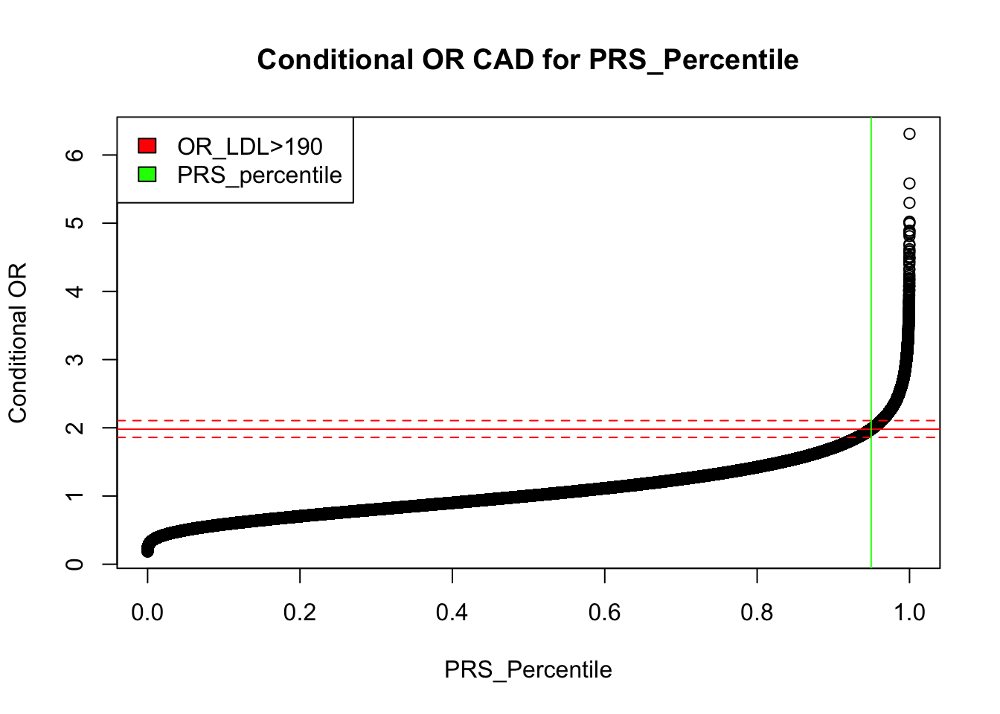
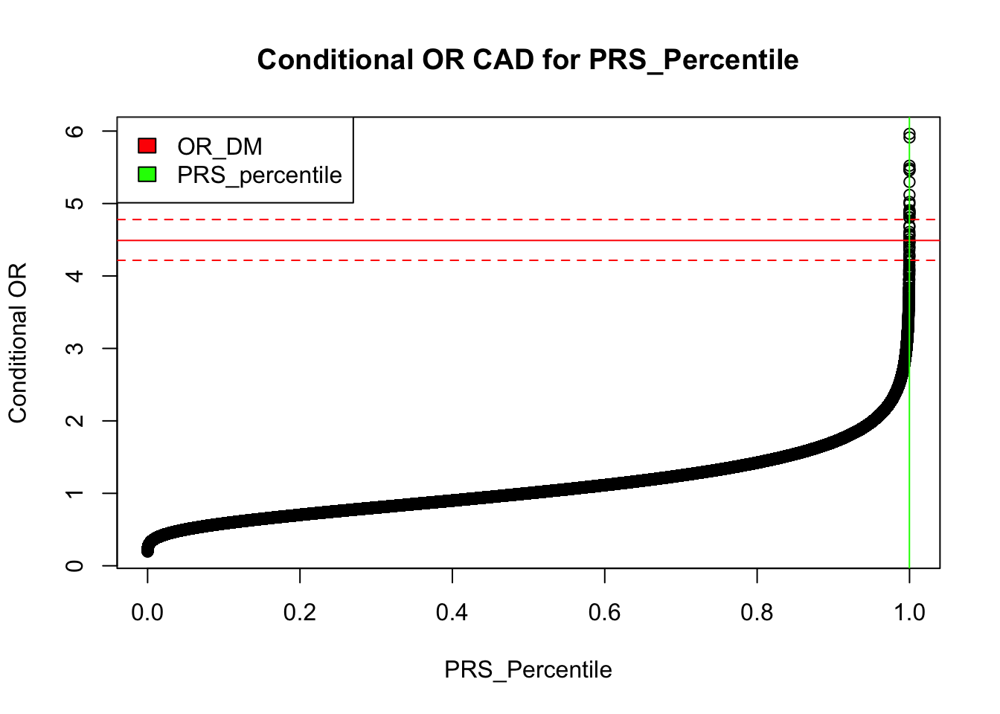
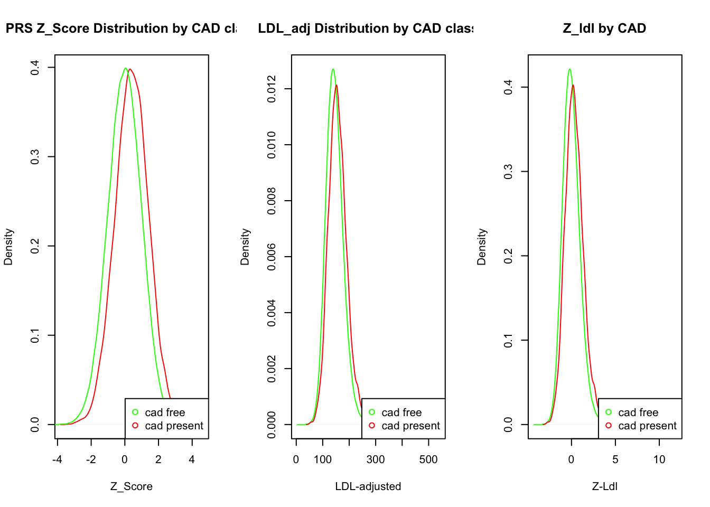

prs_equivalency
Sarah Urbut
2021-09-11
Last updated: 2021-09-17
Checks: 7 0
Knit directory: natarajanlab_wiki/
This reproducible R Markdown analysis was created with workflowr (version 1.6.2). The Checks tab describes the reproducibility checks that were applied when the results were created. The Past versions tab lists the development history.
Great! Since the R Markdown file has been committed to the Git repository, you know the exact version of the code that produced these results.
Great job! The global environment was empty. Objects defined in the global environment can affect the analysis in your R Markdown file in unknown ways. For reproduciblity it’s best to always run the code in an empty environment.
The command set.seed(20210512) was run prior to running the code in the R Markdown file. Setting a seed ensures that any results that rely on randomness, e.g. subsampling or permutations, are reproducible.
Great job! Recording the operating system, R version, and package versions is critical for reproducibility.
Nice! There were no cached chunks for this analysis, so you can be confident that you successfully produced the results during this run.
Great job! Using relative paths to the files within your workflowr project makes it easier to run your code on other machines.
Great! You are using Git for version control. Tracking code development and connecting the code version to the results is critical for reproducibility.
The results in this page were generated with repository version b3b07b3. See the Past versions tab to see a history of the changes made to the R Markdown and HTML files.
Note that you need to be careful to ensure that all relevant files for the analysis have been committed to Git prior to generating the results (you can use wflow_publish or wflow_git_commit). workflowr only checks the R Markdown file, but you know if there are other scripts or data files that it depends on. Below is the status of the Git repository when the results were generated:
Ignored files:
Ignored: .DS_Store
Ignored: .Rhistory
Ignored: analysis/.Rhistory
Ignored: analysis/metaplot_strat_torus.nb.html
Ignored: analysis/monster_mash.nb.html
Ignored: analysis/prs_equivalency.nb.html
Ignored: analysis/testplot.nb.html
Untracked files:
Untracked: analysis/metatrials_sim.Rmd
Untracked: analysis/monster_mash.Rmd
Untracked: analysis/testplot.Rmd
Untracked: analysis/torus.Rmd
Unstaged changes:
Modified: analysis/metaplot_strat_torus.Rmd
Note that any generated files, e.g. HTML, png, CSS, etc., are not included in this status report because it is ok for generated content to have uncommitted changes.
These are the previous versions of the repository in which changes were made to the R Markdown (analysis/prs_equivalency.Rmd) and HTML (docs/prs_equivalency.html) files. If you’ve configured a remote Git repository (see ?wflow_git_remote), click on the hyperlinks in the table below to view the files as they were in that past version.
| File | Version | Author | Date | Message |
|---|---|---|---|---|
| Rmd | b3b07b3 | Your Name | 2021-09-17 | wflow_publish("prs_equivalency.rmd") |
| html | 0332cfa | Your Name | 2021-09-16 | Build site. |
| Rmd | 5088098 | Your Name | 2021-09-16 | wflow_publish("prs_equivalency.rmd") |
| html | 2cdb021 | Your Name | 2021-09-16 | Build site. |
| Rmd | 3b28b7d | Your Name | 2021-09-16 | wflow_publish("prs_equivalency.rmd") |
| html | 38def72 | Your Name | 2021-09-16 | updated conditional analysi |
| html | b267cf2 | Your Name | 2021-09-13 | with incident |
| html | a122343 | Your Name | 2021-09-13 | with incident |
| html | 89a94b1 | Your Name | 2021-09-13 | with incident |
| html | fb28d8c | Your Name | 2021-09-13 | with incident |
| html | 14d8b2c | Your Name | 2021-09-12 | Update |
| html | 58d7339 | Your Name | 2021-09-12 | Build site. |
| Rmd | 2a4f6c3 | Your Name | 2021-09-12 | wflow_publish("analysis/prs_equivalency.Rmd") |
| html | 13717f6 | Your Name | 2021-09-12 | Build site. |
| Rmd | 04a1e1c | Your Name | 2021-09-12 | wflow_publish("analysis/prs_equivalency.Rmd") |
| html | eeb3abd | Your Name | 2021-09-12 | Build site. |
| Rmd | 71f8dce | Your Name | 2021-09-12 | wflow_publish("analysis/prs_equivalency.Rmd") |
| html | db7e138 | Your Name | 2021-09-11 | Build site. |
| Rmd | 82e8dbd | Your Name | 2021-09-11 | wflow_publish("analysis/prs_equivalency.Rmd") |
| html | f274bfe | Your Name | 2021-09-11 | Build site. |
| html | 8a3acc7 | Your Name | 2021-09-11 | Build site. |
| Rmd | 733145a | Your Name | 2021-09-11 | wflow_publish("analysis/prs_equivalency.Rmd") |
| html | ba9b2fb | Your Name | 2021-09-11 | Build site. |
| html | eb2ea1a | Your Name | 2021-09-11 | Build site. |
| Rmd | b13728e | Your Name | 2021-09-11 | wflow_publish("analysis/prs_equivalency.Rmd") |
Introduction
We want to understand the equivalent quantile of PRS risk that equates with risk conveyed by traditional risk factors.
First, we organize the data:
rm(list=ls())
prs=read.table("~/Dropbox/cad_AnnoPred.profile",header=T)
cov=read.table("~/Dropbox/big_ukb_file.txt",header=T,sep="\t")
ukb_adj_cov=read.table("~/Dropbox/ukbb-lipids-meds.txt",sep = "\t",header = T)
i=as.character(intersect(intersect(prs$IID,cov$id),ukb_adj_cov$eid))
rownames(prs)=prs$IID
rownames(cov)=cov$id
rownames(ukb_adj_cov)=ukb_adj_cov$eid
df=na.omit(data.frame(prs[i,],"age"=cov[i,"age"],"dm"=cov[i,"Diabetes_Type_2"],"htn"=cov[i,"SBP_adjMeds"],"sex"=cov[i,"Sex"],"cad"=cov[i,"Incd_Coronary_Artery_Disease_HARD"],cov[i,c("PC1","PC2","PC3","PC4","PC5")],"ldladj"=ukb_adj_cov[i,"ldladj"]))
df$SCORESUM=-1*df$SCORESUM
df$prs_quant=(df$SCORESUM-mean(df$SCORESUM))/sd(df$SCORESUM)
df$sex=as.factor(ifelse(df$sex=="Male",1,0))
df$ldl_fact=as.factor(ifelse(df$ldladj>190,1,0))
saveRDS(df,"~/Dropbox/df_ukb.rds")df=readRDS("~/Dropbox/df_ukb.rds")
head(df) FID IID PHENO CNT CNT2 SCORESUM age dm htn sex cad PC1
3463778 0 3463778 -9 5988140 3025432 -15.3303 41 0 133 1 0 -12.1725
2821197 0 2821197 -9 5988140 3021862 -15.1161 46 0 134 0 0 -13.0245
1514525 0 1514525 -9 5988140 3003038 -15.0992 52 0 144 0 0 -11.4712
2491905 0 2491905 -9 5988140 3007614 -15.0719 65 0 134 0 0 -12.1327
3250377 0 3250377 -9 5988136 3021081 -15.0467 56 0 172 0 0 -12.2171
3961891 0 3961891 -9 5988140 3030117 -15.1423 41 0 128 0 0 -11.2134
PC2 PC3 PC4 PC5 ldladj prs_quant ldl_fact
3463778 5.39163 -1.281030 0.841765 -5.26521 133.9134 -1.7770623 0
2821197 6.41514 -0.183365 2.927610 -5.88964 216.2800 0.3909505 1
1514525 3.48383 -1.154580 3.083830 7.65160 108.8554 0.5620029 0
2491905 4.02976 -0.988080 0.750294 -2.36431 183.0240 0.8383183 0
3250377 3.50821 -1.625990 -1.226800 -5.34580 173.8206 1.0933786 0
3961891 3.85010 -2.734880 0.286941 1.47179 123.8979 0.1257688 0library(corrplot)corrplot 0.90 loadedcorrelations <- cor(df[,c("ldladj","prs_quant","age","cad","PC1","PC2","PC3","PC4","PC5")])
corrplot(correlations, method="circle")
| Version | Author | Date |
|---|---|---|
| 2cdb021 | Your Name | 2021-09-16 |
Note that SCORESUM is actually the opposite direction (increasing score is protective) so we take the opposite. Let’s create a factor to call LDL greater or less than 190. Now, let’s fit some simple logistic regression. Here’s the Logistic with factor
#glm.fit=glm(df$cad~df$prs_quant+df$PC1+df$PC2+df$PC3+df$PC4+df$PC5+df$age+df$sex+df$ldl_fact,family=binomial)
#exp(coef(glm.fit))
r=(rank(df$prs_quant)/length(df$prs_quant))
glm.ldl=glm(df$cad~df$ldl_fact,family=binomial)
exp(coef(glm.ldl)) (Intercept) df$ldl_fact1
0.01652829 1.97949366 glm.prs=glm(df$cad~df$prs_quant,family=binomial)
exp(coef(glm.prs)) (Intercept) df$prs_quant
0.01653583 1.51951454 q=coef(glm.ldl)[[2]]/coef(glm.prs)[[2]]
w=which(df$prs_quant>q)
t=which.min(df$prs_quant[w])
perc=r[w[t]]
s=sample(seq(1,nrow(df)),100000)
r=(rank(df$prs_quant)/length(df$prs_quant))
plot(r[s],exp(df$prs_quant[s]*coef(glm.prs)[[2]]),main="Conditional OR CAD for PRS_Percentile",xlab='PRS_Percentile',ylab="Conditional OR")
abline(h=exp(coef(glm.ldl)[[2]]),col="red",pch=1)
abline(v=perc,pch=2,col="green")
legend("topleft",c("OR_LDL>190","PRS_percentile"),col=c("red","green"),fill=c("red","green"))
| Version | Author | Date |
|---|---|---|
| 2cdb021 | Your Name | 2021-09-16 |
his means we’d need a PRS quantile of 1.6320648 which corresponds to the 0.9496258 percentile to achieve the same odds rate of ldl
###############################################
glm.dm=glm(df$cad~+df$dm,family=binomial)
exp(coef(glm.dm))(Intercept) df$dm
0.01565385 4.49046952 qd=coef(glm.dm)[[2]]/coef(glm.prs)[[2]]
w=which(df$prs_quant>qd)
t=which.min(df$prs_quant[w])
perc=r[w[t]]
s=sample(seq(1,nrow(df)),100000)
r=(rank(df$prs_quant)/length(df$prs_quant))
plot(r[s],exp(df$prs_quant[s]*coef(glm.prs)[[2]]),main="Conditional OR CAD for PRS_Percentile",xlab='PRS_Percentile',ylab="Conditional OR")
abline(h=exp(coef(glm.ldl)[[2]]),col="red",pch=1)
abline(v=perc,pch=2,col="green")
legend("topleft",c("OR_DM","PRS_percentile"),col=c("red","green"),fill=c("red","green"))
This means we’d need a PRS quantile of 3.589842 which corresponds to the 0.9998323 percentile to achieve the same odds rate of dm
###############################################
glm.htn=glm(df$cad~as.factor(ifelse(df$htn>130,1,0))+df$age,family=binomial)
exp(coef(glm.htn)) (Intercept) as.factor(ifelse(df$htn > 130, 1, 0))1
0.0002363607 2.0338939702
df$age
1.0668881884 qh=coef(glm.htn)[[2]]/coef(glm.prs)[[2]]
w=which(df$prs_quant>qh)
t=which.min(df$prs_quant[w])
perc=r[w[t]]
s=sample(seq(1,nrow(df)),100000)
r=(rank(df$prs_quant)/length(df$prs_quant))
plot(r[s],exp(df$prs_quant[s]*coef(glm.prs)[[2]]),main="Conditional OR CAD for PRS_Percentile",xlab='PRS_Percentile',ylab="Conditional OR")
abline(h=exp(coef(glm.ldl)[[2]]),col="red",pch=1)
abline(v=perc,pch=2,col="green")
legend("topleft",c("OR_HTN>130","PRS_percentile"),col=c("red","green"),fill=c("red","green"))
This means we’d need a PRS quantile of 1.6968633 which corresponds to the 0.9558632 percentile to achieve the same odds rate of htn.
Predicting Risk
First consider discriminant analysis: how does the distirbution of CAD and LDL score discriminate between CAD and CAD free folks:
#
# par(mfrow=c(1,2))
# plot(density(r[df$cad==1]),col="red",main="PRS Quantile by CAD class",xlab="Quantile")
# lines(density(r[df$cad==0]),col="green")
# legend("bottomright",c("cad free","cad present"),col=c("green","red"),pch=1)
par(mfrow=c(1,3))
plot(density(df$prs_quant[df$cad==1]),col="red",main="PRS Z_Score Distribution by CAD class",xlab="Z_Score")
lines(density(df$prs_quant[df$cad==0]),col="green")
legend("bottomright",c("cad free","cad present"),col=c("green","red"),pch=1)
plot(density(df$ldladj[df$cad==0]),col="green",main="LDL_adj Distribution by CAD class",xlab="LDL-adjusted")
lines(density(df$ldladj[df$cad==1]),col="red")
legend("bottomright",c("cad free","cad present"),col=c("green","red"),pch=1)
zldl=(df$ldladj-mean(df$ldladj))/sd(df$ldladj)
plot(density(zldl[df$cad==0]),col="green",main="Z_ldl by CAD",xlab="Z-Ldl")
lines(density(zldl[df$cad==1]),col="red")
legend("bottomright",c("cad free","cad present"),col=c("green","red"),pch=1)
sessionInfo()R version 4.0.2 (2020-06-22)
Platform: x86_64-apple-darwin17.0 (64-bit)
Running under: macOS 10.16
Matrix products: default
BLAS: /Library/Frameworks/R.framework/Versions/4.0/Resources/lib/libRblas.dylib
LAPACK: /Library/Frameworks/R.framework/Versions/4.0/Resources/lib/libRlapack.dylib
locale:
[1] en_US.UTF-8/en_US.UTF-8/en_US.UTF-8/C/en_US.UTF-8/en_US.UTF-8
attached base packages:
[1] stats graphics grDevices utils datasets methods base
other attached packages:
[1] corrplot_0.90
loaded via a namespace (and not attached):
[1] Rcpp_1.0.7 whisker_0.4 knitr_1.33 magrittr_2.0.1
[5] workflowr_1.6.2 R6_2.5.0 rlang_0.4.11 fansi_0.5.0
[9] highr_0.9 stringr_1.4.0 tools_4.0.2 xfun_0.24
[13] utf8_1.2.2 git2r_0.28.0 jquerylib_0.1.4 htmltools_0.5.1.1
[17] ellipsis_0.3.2 rprojroot_2.0.2 yaml_2.2.1 digest_0.6.27
[21] tibble_3.1.3 lifecycle_1.0.0 crayon_1.4.1 later_1.2.0
[25] sass_0.4.0 vctrs_0.3.8 fs_1.5.0 promises_1.2.0.1
[29] glue_1.4.2 evaluate_0.14 rmarkdown_2.9 stringi_1.7.3
[33] compiler_4.0.2 bslib_0.2.5.1 pillar_1.6.1 jsonlite_1.7.2
[37] httpuv_1.6.1 pkgconfig_2.0.3